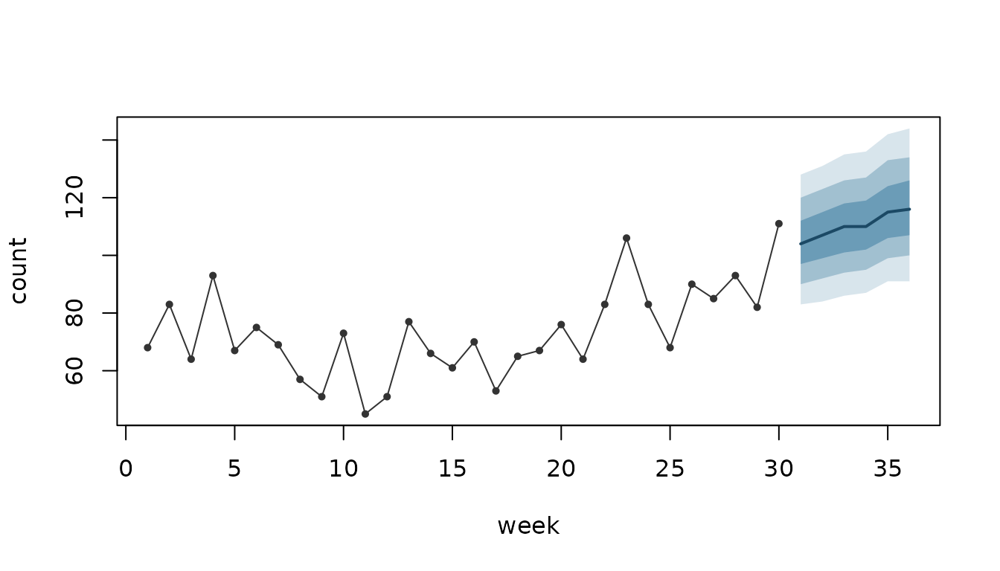
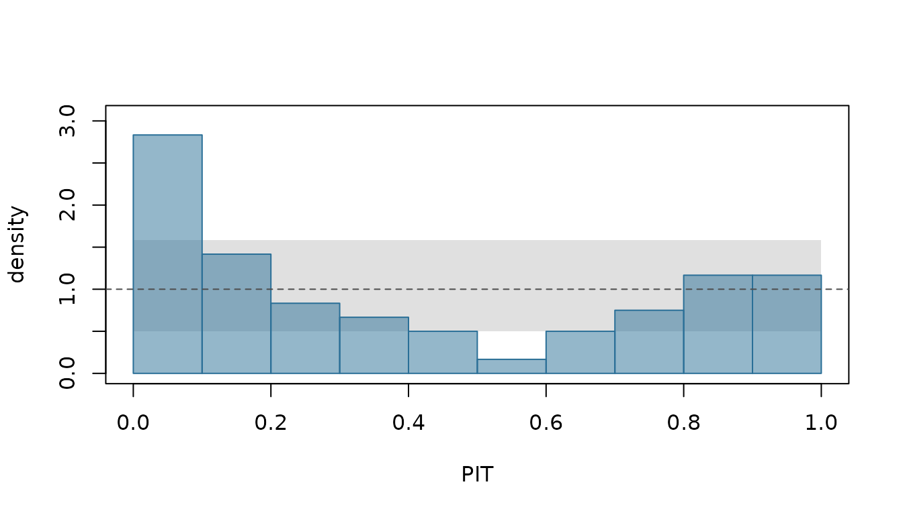
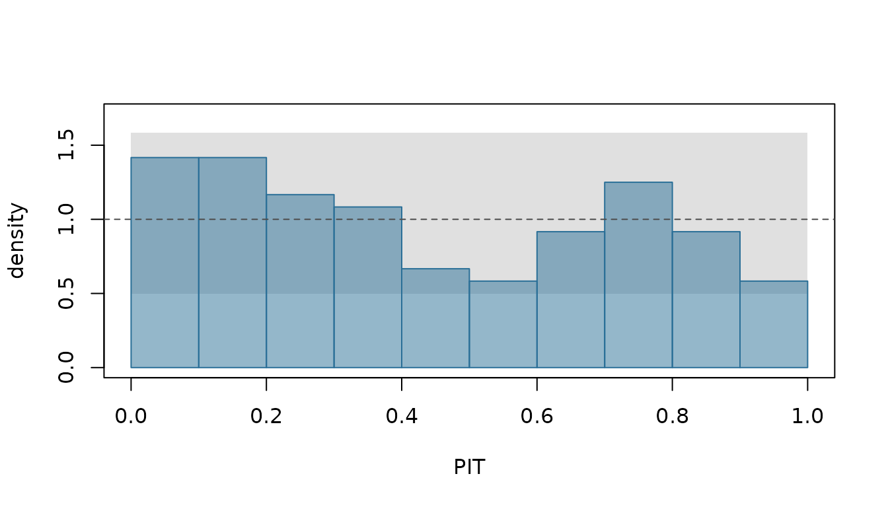

limn turns a model fitted by illume into predictive distributions: for a unit in the data or a new one, for the next weeks of a series, or for totals over many of them. It scores those distributions against what happened, checks their calibration, and compares models with standard errors that respect how the data hang together. When one of its checks finds something wrong, it says what it found, why that matters, and what to do about it.
This vignette walks through one small example from start to finish: fit, predict, forecast, total, score, check, remedy and compare.
The data and a first model
Twenty clinics report their weekly number of visits for 36 weeks. A clinic’s count depends on its size and on the temperature, and clinics differ: some are busier than their size says. The simulation draws the counts from a negative binomial distribution, so they vary more than Poisson counts with the same mean would.
set.seed(1001)
n_clinics <- 20; n_weeks <- 36
clinics <- data.frame(clinic = factor(sprintf("C%02d", 1:n_clinics)),
size = round(runif(n_clinics, 0.5, 2), 1))
visits <- expand.grid(week = 1:n_weeks, clinic = clinics$clinic)
visits$size <- clinics$size[visits$clinic]
visits$temp <- round(10 + 8 * sin(2 * pi * visits$week / 52) + rnorm(nrow(visits)), 1)
clinic_effect <- rnorm(n_clinics, 0, 0.3)
mu <- exp(1.6 + 0.5 * log(visits$size) - 0.03 * visits$temp + clinic_effect[visits$clinic])
visits$count <- rnbinom(nrow(visits), size = 3, mu = mu)
train <- visits[visits$week <= 30, ]
test <- visits[visits$week > 30, ]The last six weeks are held back to check the forecasts. The first model, fitted by illume, is a Poisson regression with a random intercept for each clinic. It is a reasonable first guess, and a wrong one: the checks below find out.
Predictions: which unit?
A mixed model predicts different things for the same row, depending
on the question: this clinic, a new clinic, a typical one, or the
average over clinics. So ilm_predict() asks. Here
groups = "fitted" predicts each row’s own clinic. A clinic
the fit has not seen is predicted as a new one, with its effect drawn
from the fitted distribution of clinics, and is marked as such:
nd <- data.frame(clinic = c("C01", "new"), size = 1, temp = 10, week = 31)
p <- ilm_predict(fit, nd, groups = "fitted", nsim = 500)
as.data.frame(p)
#> clinic size temp week new_level estimate mean lower_0.9 upper_0.9
#> 1 C01 1 10 31 FALSE 4.887985 4.904412 3.928569 6.048262
#> 2 new 1 10 31 TRUE 3.856331 3.998152 2.357997 6.325314These are predictions of the mean count. For clinic C01,
estimate is the mean at the fitted parameters; for the new
clinic, whose effect is unknown, it is the predictive median.
mean averages over everything the prediction is uncertain
about, and the limits are those of the central 90% interval. The new
clinic’s interval is wider: it carries the uncertainty in its own
effect.
The other choices are groups = "new",
"typical" (the effects at zero) and
"population" (the average over clinics). By default every
parameter is drawn jointly, the variances included
(uncertainty = "joint"); see ?ilm_predict for
the other choices.
Forecasts
ilm_future() builds the rows a forecast needs: the next
weeks of every clinic. It copies what does not change over time, such as
a clinic’s size, and leaves what does, the temperature, for you to fill
in:
fut <- ilm_future(train, time = "week", group = "clinic", h = 6, response = "count")
#> These columns vary over time, so their future values are not known: temp. They are left missing: fill them in with the values the forecast should assume.
head(fut, 3)
#> week clinic size temp count horizon
#> 1 31 C01 2 NA NA 1
#> 2 32 C01 2 NA NA 2
#> 3 33 C01 2 NA NA 3Here the temperatures are taken from the held-back weeks. That makes
this an ex-post forecast, one “made using later information on
the predictors” (fpp3, section 7.6). A forecast made at week 30 would
not know them, and would mix over plausible temperature paths instead:
ilm_covariate_paths() draws them from a model of the
temperature, and ilm_as_draws() takes them from another
tool.
fut$temp <- test$temp[match(paste(fut$clinic, fut$week), paste(test$clinic, test$week))]
fc <- ilm_forecast(fit, fut, nsim = 500)
head(as.data.frame(fc), 4)
#> week clinic size temp count horizon new_level estimate mean lower_0.9
#> 1 31 C01 2 4.8 NA 1 FALSE 9 8.703260 4
#> 2 32 C01 2 5.2 NA 2 FALSE 8 8.563481 4
#> 3 33 C01 2 4.2 NA 3 FALSE 9 8.917306 4
#> 4 34 C01 2 2.7 NA 4 FALSE 9 9.476229 5
#> upper_0.9
#> 1 14
#> 2 14
#> 3 14
#> 4 15A forecast is the distribution of a new count, so
estimate is now its median and mean its
expected value. This model has no correlation over time, so a clinic’s
forecast depends only on its effect, its size and the week’s
temperature. With one, such as illume::ilm_ar1(), each
clinic’s recent run of busy or quiet weeks would carry forward too; see
?ilm_forecast.
Totals
The total over clinics is not the sum of their intervals.
ilm_aggregate() sums the forecasts draw by draw, so what
the clinics share, the model’s parameters, carries into the total:
total <- ilm_aggregate(fc, by = "week")
as.data.frame(total)
#> week n_rows estimate mean lower_0.9 upper_0.9
#> 1 31 20 104 104.6389 86 124
#> 2 32 20 107 106.9996 88 127
#> 3 33 20 110 109.8717 90 131
#> 4 34 20 110 110.3817 90 131
#> 5 35 20 115 115.3804 94 138
#> 6 36 20 116 116.6504 95 139A fan chart shows the weekly total with the observed totals before it:
observed <- aggregate(count ~ week, data = train, FUN = sum)
ilm_plot_fan(total, time = "week", history = observed, response = "count")
The line is the forecast total’s median, and the bands are its central 50%, 80% and 95% intervals, after the observed totals of the first 30 weeks.
Checking the forecasts
With the held-back weeks, the forecasts can be scored.
ilm_scores() gives one score per row for each rule asked
for: here the log score, the continuous ranked probability score (CRPS)
and the interval score of the central 90% interval (Gneiting and Raftery
2007, sections 4.1, 4.2 and 6.2). Each is a loss: lower is better.
s <- ilm_scores(fc, test$count, rules = c("log", "crps", "interval"))
colMeans(s[attr(s, "rules")])
#> log crps interval_0.9
#> 2.904892 2.180521 18.883333A score means most beside another model’s. On its own, the first
question is whether outcomes fell where the forecasts said they would.
ilm_calibration() checks the coverage of central intervals
level by level, the bias of the mean, and the uniformity of the
probability integral transforms (PITs), and ends with a verdict:
cal <- ilm_calibration(fc, test$count)
cal
#> <calibration> 120 outcomes, poisson predictive distributions
#> PIT uniformity: chi-square 59.8 on 9 df, p < 0.001
#> coverage by level (from the PITs):
#> 50%: 25.8% (SE 4.56 percentage points), mean width 3.25
#> 80%: 60.0% (SE 3.65 percentage points), mean width 6.14
#> 90%: 73.3% (SE 2.74 percentage points), mean width 7.72
#> 95%: 80.8% (SE 1.99 percentage points), mean width 9.36
#> Too narrow: 80.8% of outcomes fell inside the central 95% of their predictive distributions, against 95% expected. The predictions are more certain than the data bear out. Reference: Gneiting, Balabdaoui and Raftery (2007), Journal of the Royal Statistical Society B 69, 243-268, pp. 252-253.
#> Remedy: Overdispersion is the usual cause for counts (limn's own reasoning): refit with family = "nbinom" in illume::ilm_model(), which lets the variance exceed the mean.The intervals are far too narrow, at every level. The verdict names the usual cause for counts, and the remedy: a family whose variance can exceed its mean. The PIT histogram shows the same:
ilm_plot_pit(ilm_pit(fc, test$count))
If the forecasts are right, the PITs are uniform, and each bar falls
inside the shaded band with probability 0.95; with ten bars, one may
stray outside it by chance. This histogram is far from flat. The bar
nearest 0 is nearly three times as high as it should be and the middle
bars are low: too many outcomes fell in the tails of their predictive
distributions, and nearly all of the excess is in the lower tail.
Gneiting, Balabdaoui and Raftery (2007, section 3.1, p. 253) note that
“U-shaped histograms often correspond to predictive distributions that
are too narrow”. A histogram that slopes one way can also mean bias (see
?ilm_plot_pit), but the calibration check found no bias in
the mean beyond sampling error.
The fit’s own checks in illume found nothing to remedy:
illume::ilm_remedies(fit)
#> No remedies: every check is OK.The problem shows only when the forecasts meet new data, which is what limn checks. The check treats the 120 held-back outcomes as independent, though they share clinics and weeks, so its standard errors may be too small. Here the shortfall is large at every level.
The remedy, and the check again
The remedy is a change to the model, so it is made in illume: refit with a negative binomial family, forecast the same rows, and check again.
fit_nb <- illume::ilm_model(count ~ log(size) + temp + (1 | clinic), data = train,
family = "nbinom", verbose = FALSE)
fc_nb <- ilm_forecast(fit_nb, fut, nsim = 500)
ilm_calibration(fc_nb, test$count)
#> <calibration> 120 outcomes, nbinom predictive distributions
#> PIT uniformity: chi-square 11.0 on 9 df, p = 0.276
#> coverage by level (from the PITs):
#> 50%: 43.3% (SE 4.56 percentage points), mean width 4.93
#> 80%: 80.0% (SE 3.65 percentage points), mean width 9.40
#> 90%: 89.2% (SE 2.74 percentage points), mean width 12.3
#> 95%: 95.0% (SE 1.99 percentage points), mean width 14.8
#> Consistent with calibration: coverage within sampling error at every level, no bias in the mean, and the PITs consistent with uniform (p = 0.276).
ilm_plot_pit(ilm_pit(fc_nb, test$count))
The intervals now cover about as often as they should, and every bar of the PIT histogram is within the band.
Comparing the two models
Scores compare the two models. Both are scored on the same rows, and
ilm_compare() tests the difference. The rows share clinics,
so the standard error is clustered by clinic:
s_nb <- ilm_scores(fc_nb, test$count, rules = c("log", "crps", "interval"))
ilm_compare(poisson = cbind(test["clinic"], s["log"]),
nbinom = cbind(test["clinic"], s_nb["log"]), rule = "log", by = "clinic")
#> nbinom's log score is lower than poisson's by 0.341 a row (SE 0.0684, clustered by clinic, 20 clusters; p < 0.001).
#> Scores are losses: lower is better.The negative binomial model’s log score is lower by about five standard errors, though its intervals are wider.
Cross-validation over rolling origins
One held-back stretch is one test. Rolling origins give several: at
each origin the model is refitted to the weeks up to it and forecasts
the weeks after it, which fpp3 (section 5.10) calls “evaluation on a
rolling forecasting origin”. ilm_folds() builds the
origins, here every week from week 20 to week 33, each forecasting three
weeks ahead. ilm_cv() refits and scores each one:
folds <- ilm_folds(visits, type = "rolling", time = "week", group = "clinic",
initial = 20, horizon = 3, step = 1)
cv <- ilm_cv(fit, visits, folds, rules = "log", nsim = 200)
cv
#> <ilm_cv> 840 scored rows over 14 rolling folds; refit each, groups = "fitted"
#> Mean scores (lower is better):
#> log
#> 2.77
#> By horizon:
#> horizon log
#> 1 2.75
#> 2 2.79
#> 3 2.78
#> Ex-post: temp would not be known at the origin, which flatters the forecasts (see ilm_folds(known = )).
#> For standard errors, compare models with ilm_compare().ilm_cv() flags that the evaluation is ex-post:
each fold’s forecast rows carry the temperature that was observed, which
would not be known at the origin. If a covariate’s future values would
be known, such as a calendar effect, name it in
ilm_folds(known = ), and the evaluation is
ex-ante.
The same folds score the negative binomial model, and
ilm_compare() tests the difference origin by origin:
cv_nb <- ilm_cv(fit_nb, visits, folds, rules = "log", nsim = 200)
ilm_compare(poisson = cv, nbinom = cv_nb, by = "origin")
#> nbinom's log score is lower than poisson's by 0.281 a row (SE 0.0560, fixed-smoothing Diebold-Mariano (m = 2) over 14 origins, pooled over horizons; p = 0.00734).
#> nbinom's log score is lower than poisson's by 0.273 a row (SE 0.0593, fixed-smoothing Diebold-Mariano (m = 2) over 14 origins, horizon 1; p = 0.00998).
#> nbinom's log score is lower than poisson's by 0.291 a row (SE 0.0683, fixed-smoothing Diebold-Mariano (m = 2) over 14 origins, horizon 2; p = 0.013).
#> nbinom's log score is lower than poisson's by 0.280 a row (SE 0.0632, fixed-smoothing Diebold-Mariano (m = 2) over 14 origins, horizon 3; p = 0.0114).
#> Scores are losses: lower is better.The negative binomial model’s log score is lower pooled over the
horizons and at each horizon, every p-value below 0.02. Forecasts from
neighbouring origins overlap, so the origin means are correlated, and
the test allows for it. It is the fixed-m test of Coroneo and Iacone
(2020, section 4.2), one of their fixed-smoothing tests. In limn’s own
simulation it held its size from 10 origins up, which is why this
example has 14 (see ?ilm_compare).
Where next
-
?ilm_predictfor the choices behind every prediction. -
?ilm_forecast,?ilm_futureand?ilm_covariate_pathsfor forecasting. -
?ilm_scores.ilm_predfor each scoring rule’s definition, and its source where it has one. -
?ilm_calibration.ilm_predfor the verdicts and what to do about each. -
?ilm_cvand?ilm_comparefor cross-validation and comparisons.
References
Coroneo, L. and Iacone, F. (2020). Comparing predictive accuracy in small samples using fixed-smoothing asymptotics. Journal of Applied Econometrics 35(4), 391-409. Section 4.2.
Gneiting, T., Balabdaoui, F. and Raftery, A. E. (2007). Probabilistic forecasts, calibration and sharpness. Journal of the Royal Statistical Society B 69, 243-268. Section 3.1, p. 253.
Gneiting, T. and Raftery, A. E. (2007). Strictly proper scoring rules, prediction, and estimation. Journal of the American Statistical Association 102(477), 359-378. Sections 4.1, 4.2 and 6.2.
Hyndman, R. J. and Athanasopoulos, G. (2021). Forecasting: Principles and Practice, 3rd edition. OTexts. Section 5.10, “Time series cross-validation”, and section 7.6, “Forecasting with regression” (online edition, https://otexts.com/fpp3/, read 19 October 2026).